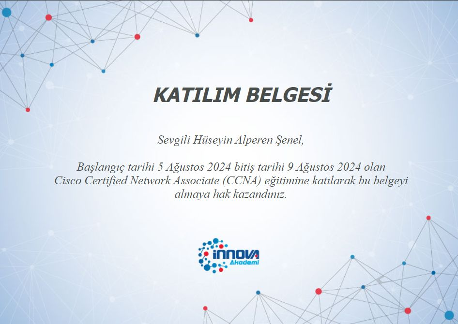
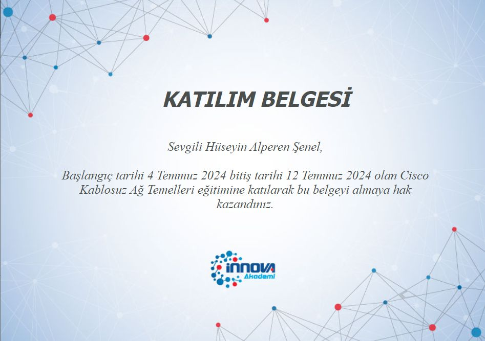
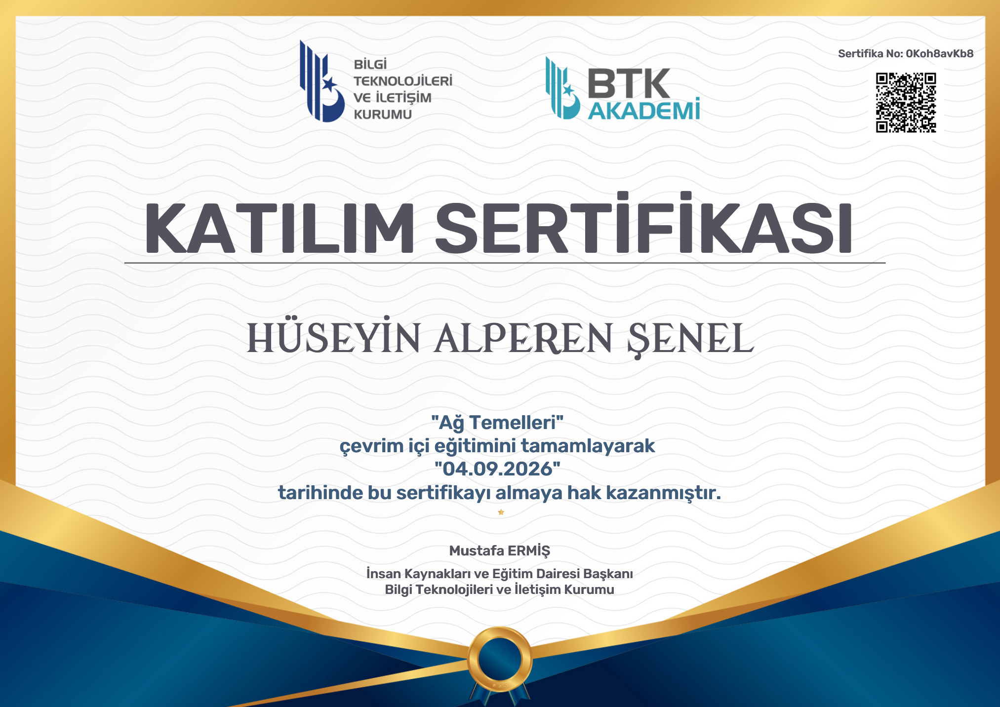
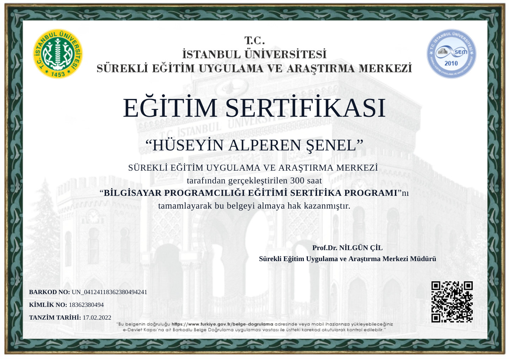

Merhaba, ben
H. Alperen Şenel
IT & Helpdesk Uzmanı · Dijital Çözüm Geliştirici
◇ IT Destek⌘ Sistem & Ağ✦ AI Destekli Geliştirme
İstanbul merkezli; kurumsal ağ altyapıları, son kullanıcı desteği, teknik operasyonlar ve yapay zekâ destekli otomasyon çözümlerinde 3.5+ yıllık deneyime sahibim.
alperen@network:~online
$ whoami
h_alperen_senel — IT & dijital çözümler
$ cat uzmanliklar.txt
- ağ & sistem desteği
- teknik operasyonlar
- Python & C++ otomasyonu
- QA & yazılım testi
$ status
yeni fikirlere açık ✓

01
Hakkımda
Yönetim Bilişim Sistemleri mezunu bir IT & Helpdesk uzmanıyım. Innova Bilişim bünyesinde 3.5 yılı aşkın süre kurumsal ağ altyapıları ve L1 teknik destek operasyonlarında görev aldım. Bugün İstanbul Nişantaşı Üniversitesi'nde teknoloji destek hizmetleri alanında çalışıyorum.
Teknolojiyi yalnızca bir meslek değil, sürekli gelişen bir üretim alanı olarak görüyorum. Yapay zekâ destekli Python araçları ve C++ projeleri geliştiriyor; kişisel sanal laboratuvarımda Active Directory, sistem yönetimi ve yazılım test uzmanlığı üzerine çalışıyorum.
KONUMBahçeköy, Sarıyer / İstanbul
YABANCI DİLİngilizce B1 · Rusça A1
EHLİYETA ve B Sınıfı · İHA Pilotu
KİŞİSEL1998 · Askerlik tamamlandı
Şu sıra ilgilendiğim alanlar
Ağ TeknolojileriPythonActive DirectoryQA OtomasyonuGörüntü İşlemeMobil UygulamaSportif BalıkçılıkMotosikletDroneAğ TeknolojileriPythonActive DirectoryQA OtomasyonuGörüntü İşlemeMobil UygulamaSportif BalıkçılıkMotosikletDrone
02
Yetenekler
Teknik destekten otomasyona uzanan, sahada kullandığım araçlar ve gelişim alanlarım.
Donanım & Teknik
Sanallaştırma
Yazılım & Otomasyon
Kalite Güvence
Uzak Erişim & AI
03
Deneyim
Teknoloji Destek Hizmetleri Uzmanı
2026 — Devam ediyorİstanbul Nişantaşı Üniversitesi · İstanbul
- Son kullanıcı IT desteği; bilgisayar, yazıcı ve projeksiyon ekipmanlarının yönetimi.
- Konferans salonu etkinlikleri, kablolama ve switch ağ sorunlarına teknik destek.
- IP kamera kurulumları, arıza giderme ve envanter/zimmet takibi.
Serbest Yazılım Geliştirici & IT Danışmanı
2024 — Devam ediyorFreelance
- Yapay zekâ destekli Python otomasyonları ve müşteriye özel çözümler.
- Windows için uygulama bazlı proxy yönetimi sağlayan C++ aracı.
- BalıkçıPro mobil uygulamasında proje yönetimi ve geliştirme.
- Bilgisayar arıza teşhis, bakım, temizlik ve onarım hizmetleri.
Level-1 Destek Uzmanı
2022 — Temmuz 2025Innova Bilişim Çözümleri
- Kurumsal ağ altyapısı operasyonları ve L1 arıza tespiti.
- Ağ ve yazılım sorunlarının çözümü; karmaşık vakaların L2/L3 ekiplere eskalasyonu.
Operasyon Takım Lideri
2022Cleango Life
- Veri, rezervasyon ve kriz anı çağrı yönetimi.
- Personel atamaları ve hizmet kalitesi süreçlerinin denetimi.
Rehberlik ve Kariyer Asistanı
2018 — 2020Nişantaşı Üniversitesi
- Üniversite adaylarına bölüm tanıtımı ve kariyer planlama danışmanlığı.
Bilgi İşlem Stajyeri
2015 — 2016Sarıyer Belediyesi · Bilgi İşlem Daire Başkanlığı
- Teknik destek, sistem bakımı, bilgisayar arıza giderme ve veri girişi operasyonları.
04
Eğitim
Yapay Zekâ ile Kodlama · Ön Lisans
Anadolu Üniversitesi
2026 — Devam ediyorİnternet ve Ağ Teknolojileri · Ön Lisans
Ondokuz Mayıs Üniversitesi
2025 — HalenYönetim Bilişim Sistemleri · Lisans
Nişantaşı Üniversitesi · İstanbul
Web Programcılığı
Şükran Ülgezen Mesleki ve Teknik Anadolu Lisesi
2012 — 201605
Projeler
Teknik ihtiyaçları çalışan ürünlere dönüştürdüğüm kişisel ve müşteri projeleri.
Per Process Proxy Changer
Windows ortamında her uygulamaya ayrı proxy atamayı sağlayan özgün C++ yönetim aracı.
BalıkçıPro Mobil Uygulaması
Sportif balıkçıların ihtiyaçlarına odaklanan mobil uygulamanın fikir, konsept, operasyon ve geliştirme süreçleri.

Avente Parfüm Kataloğu
Stok, filtreleme, koku keşif testi ve yönetim paneli bulunan parfüm kataloğu.
Canlı site ↗
Son Vardiya
1–4 oyunculu, dalga tabanlı mücadele ve karakter gelişimi sunan co-op zombi oyunu.
Canlı site ↗YZ Destekli Süreç Otomasyonu
YOLO ve OCR ile insan müdahalesi gerektiren doğrulama adımlarını otomatikleştiren Python betikleri.
İletişim API Entegrasyonları
Discord ticket taleplerini anlık olarak Telegram kanallarına yönlendiren otomasyon botları.
QA Mühendisi Yol Haritası
Yazılım testinde temelden ileri seviyeye uzanan interaktif öğrenme haritası.
Yol haritasını keşfet →9Ana kategori
40+Konu kartı
13Aşamalı akış
06
Sertifikalar
Belgenin tam boyutlu hâlini açmak için görsele tıklayabilirsin.

Innova · CCNA

Innova · Cisco

BTK Akademi · Ağ Temelleri
BTK Akademi · Bilgi Teknolojilerine Giriş

İstanbul Üniversitesi · Bilgisayar Programcılığı
07
İletişim
Bir proje konuşmak, teknik destek almak veya sadece merhaba demek için benimle doğrudan iletişime geçebilirsin.